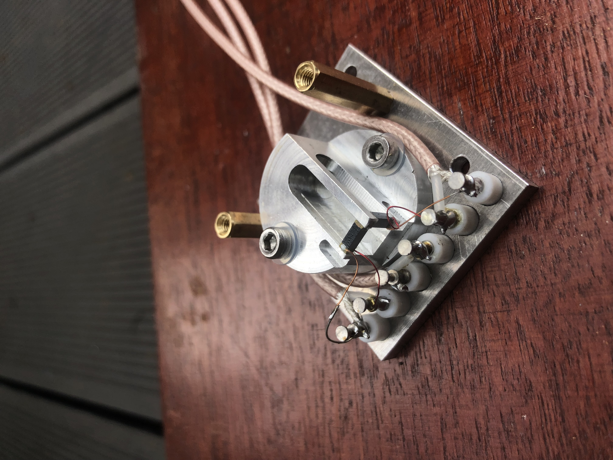
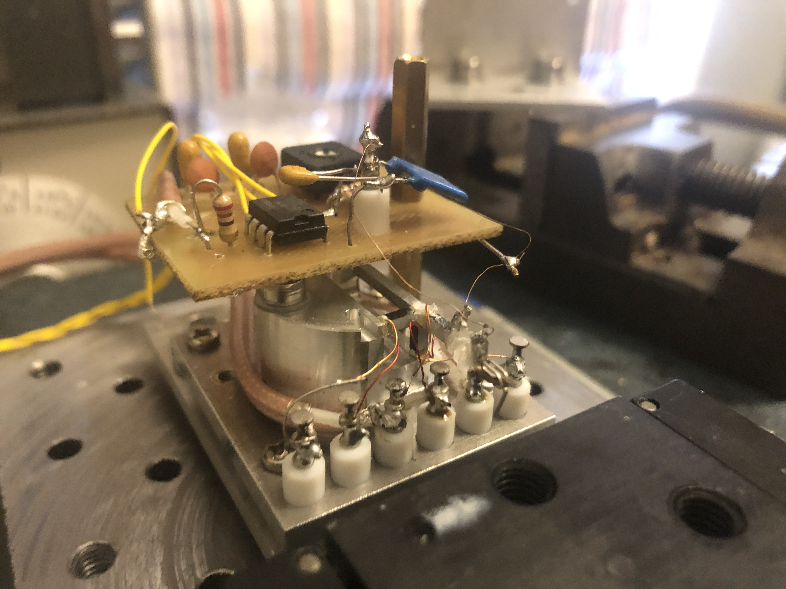

Quantum Tunneling
I have been trying and failing to build a scanning tunneling microscope, but I have learned some interesting things along the way.
The key compoenent of a STM is the piezo scanner which moves the tip relative to the sample. I decided to go for something very close to the "tripod" design you see in textbooks, using 1mm wide 5mm long multilayer stacks bought on eBay for about $5 each. I machined a flexure to hold them from a single piece of aluminium.

To reduce the inertia of the z-axis piezo, it has no flexure but is glued directly to the end of the aluminium cantilever. This sounded like a good decision but I would live to regret it: the very fragile 1mm x 1mm glue bonds made changing the tip without requiring new glue very difficult. Note the excessive superglue residue in the picture below.

I used this scanner (only the z-piezo) to measure a tunneling current of 1nA between two gold plated wires. This was achived by amplifying the tunneling current and subtracting it from 1nA to produce an error signal which went through an analogue integral feedback loop. I could sustain this current without crashing the wires into each-other (seen by the current amp suddenly saturating)for 10s of seconds but the drift was considerable. Too much for use in an STM. This setup is shown below:

I think what this project needs is better acoustic and electronic shielding and thermal insulation from its environment.
September 2022
Update 2024: I intend to finish this project at some point but it lost momentum. It is definitely achivable, other hobbyists have made functional STMs with much more primitive scanners, however, generally with better vibration isolation. Maybe this is one to revisit once I graduate, I still have all the parts.